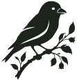

Ziselin · Weitere Werkzeuge
Andere
Eigenständige Werkzeuge außerhalb der Bereiche Atlas und Schola. Direkt, übersichtlich und ohne zusätzliche Anmeldung nutzbar.
Apps
Deus GuideEinstellungsassistent für den XP Deus IIKeine passende App gefunden.

ziselin AndereZiselin · Weitere Werkzeuge
Eigenständige Werkzeuge außerhalb der Bereiche Atlas und Schola. Direkt, übersichtlich und ohne zusätzliche Anmeldung nutzbar.
Keine passende App gefunden.